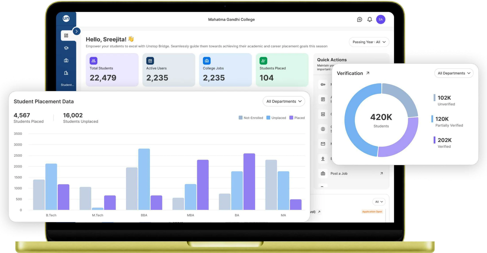
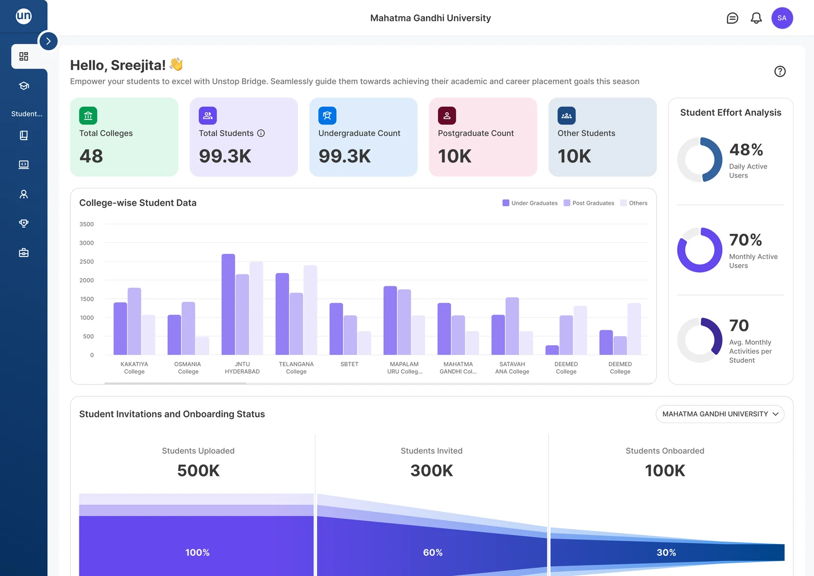
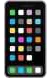
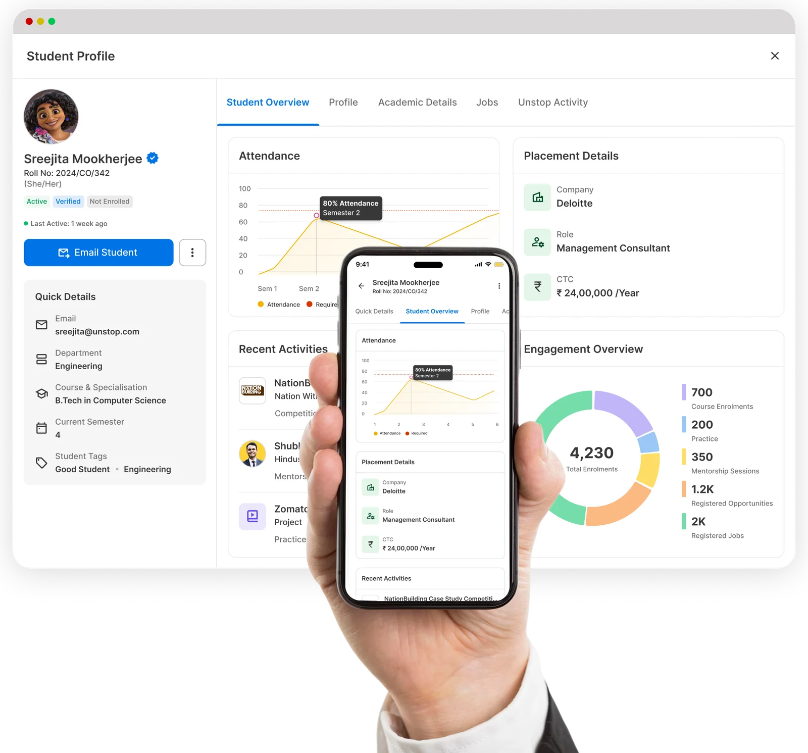
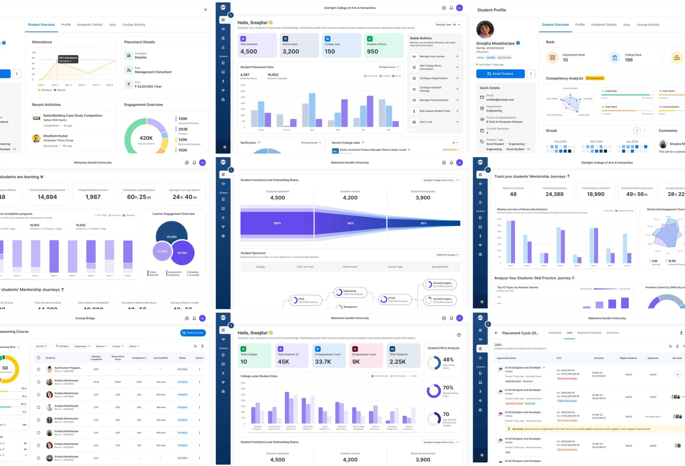
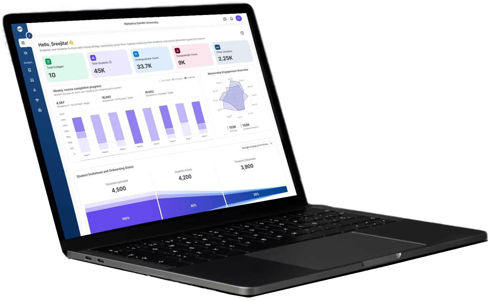

Unstop Bridge · Edtech · SaaS
Designing the brain behind college placements

A placement portal that gives colleges and universities one live view of their students — from learning to landing jobs.
- Platforms
- Desktop · Mobile web
- Impact
- 1.45M users in 6 months
What’s Unstop Bridge?
When we decided to build a placement platform for colleges, they didn’t want just another admin panel — we wanted the control room.
One that felt less like “upload CSVs and hope for the best,” and more like:
“Finally — see how your students are learning, improving, and landing jobs. In real-time. Across every department, college, and state.”

Where others failed?
Colleges were juggling scattered spreadsheets, multiple platforms, and manual coordination to drive placements. And on the university level? Even worse. No unified snapshot of how their entire ecosystem was performing.
Existing platforms didn’t solve the chaos. They added to it.
No visual mapping of student data
Platforms rely heavily on spreadsheets or basic filters — missing out on visual systems that clearly map batches, branches, and departments for quick access.
Confusing user flows
Users often struggle to figure out how to perform simple actions like viewing student lists, scheduling interviews, or tracking applicants across branches.

Non-responsive design
Many platforms aren’t optimized for smaller screens, with elements overlapping or requiring excessive scrolling.
Outdated visual language
The interface design lacks modern aesthetics, making it less engaging — especially for student and admin users who expect cleaner, app-like experiences.
How we succeeded?
We reimagined placements not as paperwork — but as performance. Our design gave colleges one platform to track, manage, and improve student outcomes in real time.
Unified, real-time dashboard
A single, live snapshot across students, departments, and years — with drill-down tabs for detailed insights.
Built-in guidance, not just admin panels
Smart defaults, onboarding nudges, and contextual actions that help admins and placement officers take the next step — not just view data.
Modular for any college setup
Whether it’s a single college or a whole university group, our system adapts to branches, batches, and governance levels.
Clear, human-like language
We ditched the admin speak. Labels and interactions are written like a human would say it — making it intuitive even for non-tech-savvy users.
Fully responsive from day one
From phones to desktops, everyone has access to core workflows — because decisions don’t wait.

My process
Designing for education and government needs clarity, not clutter. My approach was rooted in empathy and iteration:
The goal: reduce friction, build trust, and give colleges the power to act fast.
Built for the entire student journey
One connected platform for learning, engagement, mentorship, and placements — giving colleges a complete view of their students and the power to act on it.


The Impact
1.45 million users
from 24,000 in just 6 months
Adopted by multiple state governments, the platform is now being rolled out across public universities. It’s helping colleges shift from reactive placement efforts to a proactive, data-driven strategy.
Keep exploring